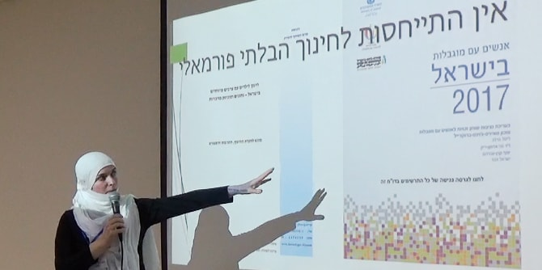

Israeli society, like many other places in the world, has a long history of social marginalization. Most of us tend to seek the company of people who are similar to us, and shun those who are different. However, a healthy society is one that values the differences of its members, and knows how to make the most of them.
The Social Hackathon hosted by the Mandel Center for Leadership in the North was open to the general public, and was attended by fellows of the program and external guests. During the course of the day, participants explored the question of whether informal education in its current state meets the needs of people with disabilities. Similarly, it examined how informal education settings might be encouraged to promote inclusion and acceptance of diversity in Israeli society.
The participants also enjoyed an uplifting performance by Bayit Baemek, a group of young adults from a "home in the community" – a residential project for people with cognitive disabilities. Members of the troupe performed some well-known songs and poems, alongside some original material. Their performance, which moved everyone in the audience to the core, demonstrated the extent to which “inclusion” is about more than just giving to others, and how much society stands to gain from promoting inclusion and fostering acceptance. The discussions at the hackathon gave rise to the idea of creating a "certification mark" that will attest to compliance with standards for social inclusion. Several fellows have already begun to work on this project.

{kind=link}